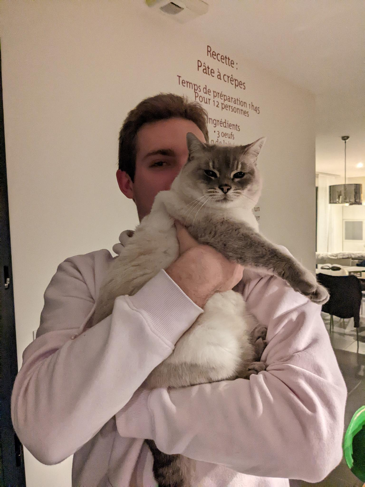

D'où je viens ?
Je m'appelle Sylane. Je viens d'une petite île située au milieu du de la mer des caraïbes : la Guadeloupe,j’ai grandi à Sainte Anne une petite ville proche de la mer. C’est là que je passe une grande partie de mon enfance qui à été bercée par l’ambiance des tropiques.
Dès le début de ma vie, j’ai tout de suite été passionné par les créatures marines en tous genres, et j’ai toujours été émerveillé par la diversité des mers de Guadeloupe. Mes parents se rappellent encore que je leur suppliait de n’emmener à l’aquarium plusieurs fois par semaine.
En grandissant, je découvre les mathématiques à l’école, et c’est très vite devenu une passion pour moi puisqu’à l’école primaire j’ai participé à divers concours tels que des « rallies mathématiques » et des concours de calcul mental.
Au collège, je choisis de l’option voile pour complémenter le reste de mes cours, une discipline que j’apprécie beaucoup qui m’amène à arbitrer en 2016, le championnat UNSS de planche à voile dont je garde un excellent souvenir aujourd’hui.
Après avoir obtenu mon brevet des collèges, je quitte la Guadeloupe et je pars m’installer avec mes parents et ma sœur en Bretagne dans la ville de Quimper. J’entre au Lycée de Cornouaille pour obtenir mon baccalauréat général. En première, je choisis de m’orienter vers la filière scientifique (à l’époque le BAC S). En terminale je choisis la spécialité mathématiques et j’obtiens mon baccalauréat au contrôle continu en 2020 suite à la perturbation des épreuves lié à la crise sanitaire de la COVID-19 en 2020.
Je choisi de poursuivre mes études supérieur à l’ENIB, je suis allé vers des études d’ingénieur suite à mon goût des mathématiques et l’excellent accueil des étudiants de l’ENIB au forum Azimut à Brest.
A l’heure actuelle, je termine ma quatrième année année et si tout se passe bien je l’année scolaire 2025-2026 sera la dernière avant d’être diplômé.
Qu'est ce que j'aime ?
J'ai expérimenté quelques activités sportives tout au long de ma vie tels que : le judo , le tennis , le surf , la planche à voile mais aujourd'hui ce que je fais c'est du badminton. J'en fais de manière casuelle même si ça m'arrive de participer à des compétitions inter-écoles
de temps en temps.J'aime la lecture , le cinéma et les jeux vidéos mais ma grande passion du moment c'est le code !
Je trouve beaucoup de satisfaction à résoudre des problèmes en tous genres. Que ce soit résoudre des petites enigmes sur Leetcode ou Advent of Code ou alors de créer des projets concrets. J'ai de l'expérience avec des langages tels que Python , C , C++ , Java , ASM et Javascript, mais mon choix principal pour mes projets personnels sur tourne vers Rust que j'apprécie énormément dans sa philosophie et son fonctionnement combinant à la fois les performances des langages de bas niveau
avec l'ergonomie des languages de haut niveau tout en y incorporant des principes forts de la sécurité mémoire
J'aimerai beaucoup pouvoir en faire mon métier. Que ce soit dans le développement web ou logiciel ou même des conceptions de bas niveau sur des systèmes enbarqués, je serai plus que ravi de
pouvoir travailler sur ces choses au quotidient. Travailler sur des application de traitement du signal me donne beaucoup envie également étant un domaine que j'apprécie énormément.
Voilà qui conclut ma toute pétite présentation de ma personne,je suis conscient que cette page pourrai être plus complête. Je rajouterai plus de contenu quand je souhaiterai raconter plus de choses.
En attendant, j'espère que cette page vous à plus! Merci à vous de l'avoir lue !

Une photo de mon chat et moi !
Un grand merci à Vincent Kerhoas et Fabrice Harrouet, professeurs à l'ENIB (avec des sites personnels au contenu très interessant) et à mes collègues Elouan et Florian qui ont inspiré la création de ce site.
Hosted with GitHub Pages.